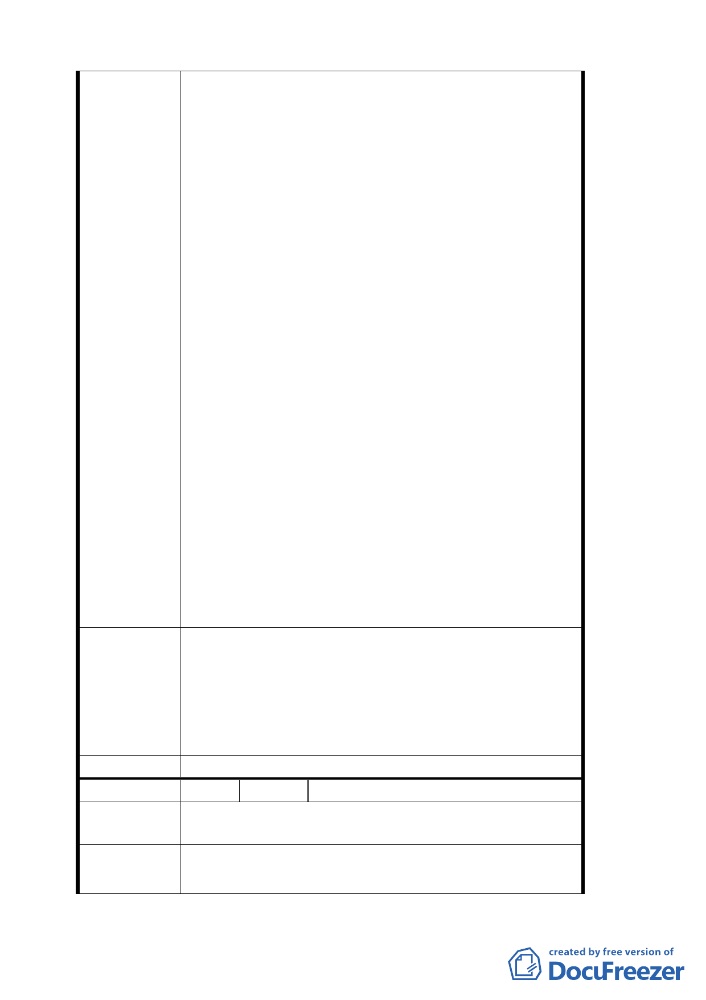

之景觀，則是否應先界定從何種方向、距離及角
度觀看，再劃定建築高度及量體應予限制之區
域，此種界定實屬困難並流於主觀，且將造成古
蹟或歷史建物周邊大範圍的建物高度及量體之限
制，嚴重影響當地居民之權益，徒然製造爭議，
亦無助於達成維護古蹟或歷史建物景觀之目的。
（3）「擬定臺北市大安區青田街保存專用區細部計畫暨
週邊地區都市設計管制案」說明肆之二已規劃：
未來本計畫區除保存區外之開發建築須先經「台
北市都市設計及土地使用開發許可審議委員會」
審議通過，則嗣後個案建築是否影響或配合古蹟
或歷史建築景觀可藉由委員會機制客觀審查，應
足可收維護古蹟及歷史建物景觀之功效，如再加
諸上開不確定、不客觀、不周延之法律文字，徒
然造成個案審議時之困擾，如審議時又無法界定
客觀標準，更將引發特權介入之質疑與民怨之憾。
綜上都市設計管制要點第三條第（二）項該後段
規定顯已違反行政程序法第七條：「行政行為應依下列
原則為之:一.採取之方法應有助於目的之達成。二.
有多種同樣能達成目的之方法時，應選擇對人民權益
損害最少者。三.採取之方法造成之損害不得與欲達成
目的之利益顯失均衡。」，並與憲法第二十三條比例原
則以及第十五條保障人民財產權之意旨不符。
本行前以 94 年 4 月 12 日 94 總財字第 0940006035
號書函籲請貴府文化局及都市發展局擬定該區都市計
畫時應符合上開原則，爰特此重申。
「擬定臺北市大安區青田街保存專用區細部計畫案都
市設計管制要點」第三條第（二）項前段限制住宅區高
建
議
辦
法
度以不超過 7 層樓為原則，已足以維護古蹟及歷史建物
現況景觀，但後段針對「緊鄰」清真寺街廓之建築基地
限制「開發建築高度與量體規劃不得破壞清真寺之景
觀」，則有不當及違法之處，本行建議予以刪除。
委員會決議 同意刪除。
編 號 3 陳情人 周瑜家
陳
情
理
由
建議讓現在居住人向國有財產局，承租
以便一齊保養維護，及看守。
17
號及
19
號，
建
議
辦
法
請求國有財產局以租金抵維修費用，以保存本市珍貴文
化資產。
27